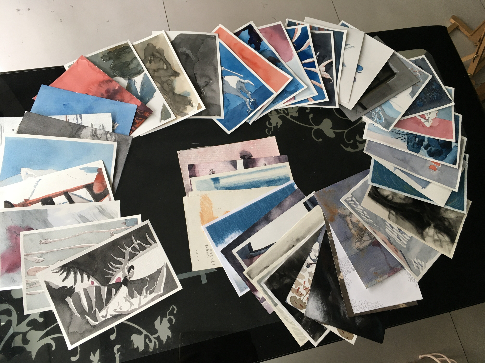

四月#
给第一批 找自己 作业拍照#

第一批作业合影#
一加的相机颜色太过鲜艳，于是用 iPad 拍。 房东送来一闲置的玻璃茶几，把 iPad 平放在茶几，画放在下边的置物架， 可以保证拍摄角度的水平，相机也不易在平面上滑动，每次只要把画放在固定的位置上就好。
备注
话虽如此，实际操作上有些问题，尽管这一批都是 32K 的大小，但因为自己手裁不精确、 不同厂的规格不一样，每次总是需要稍微移动一下，总之不用每次挪相机已经很好了。
另，K（开）的纵横比是 √2:1 [1] ，显然苹果（以及一加）的默认相机 不支持这样的纵横比，因为画面出现无关的内容很难受，所以我选择拍摄的时候舍弃一部分 画面 现在好像有点后悔 。
拍出来的照片不知道为啥横的倒过来了，竖的横过来的，那就转一下:
# 横
for j in *.JPG; do mogrify -rotate 180 $j; done
# 竖
for j in *.JPG; do mogrify -rotate 90 $j; done
根据 SO 的建议 [2] 压缩一下，平均大小 3.2M -> 1.5M:
for j in *.JPG; do mogrify -strip -interlace Plane -gaussian-blur 0.05 -quality 85% $j; done
把图片加入文档时学了一个新 vim 快捷键：normal 下按 C-a 光标下文字的数字 + 1
代码注释中的 “XXX” 是什么意思#
就是引起注意的意思，可以说比较含糊地包括了 TODO, FIXME, NOTE, HACK [3]
Linux 根据 PID 获取进程名#
很简单但没想到:
cat /proc/PID/cmdline
于是高乃依正准备上天#
- Date:
2020-04-25
📖 高乃依 逃跑了所以明天不用去画室 :)

竹蜻蜓是点外卖送的……#
照片 -> GIF:
convert -rotate 90 -resize 20% -delay 15 -loop 0 $(ls *.jpg| grep 0425) 于是高乃依正准备上天.gif
GIF -> MP4（ -r 指定 fps， -stream_loop 指定循环次数）:
ffmpeg -r 5 -stream_loop 3 -i 于是高乃依正准备上天.gif -movflags faststart -pix_fmt yuv420p -vf "scale=trunc(iw/2)*2:trunc(ih/2)*2" 于是高乃依正准备上天.mp4
Plan 9#
两个核心概念：
[t]he foundations of the system are built on two ideas: a per-process name space and a simple message-oriented file system protocol. — Pike et al. [4]
如果你有任何意见，请在此评论。 如果你留下了电子邮箱，我可能会通过 回复你。